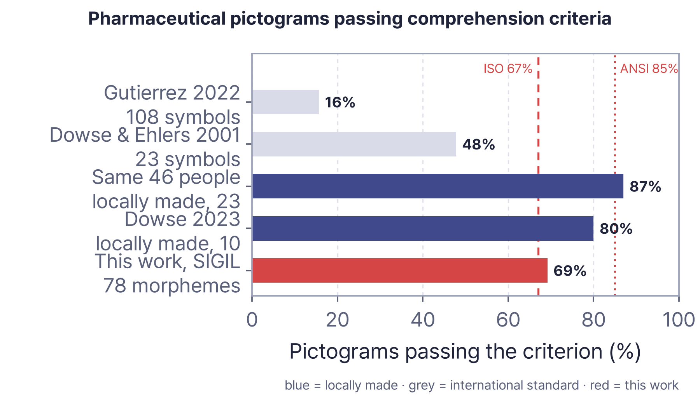

01The problem
A prescription is written to be read. In Korea 59.7% of adults aged 65 and over fall below a sufficient level of health literacy.
Removing the text is not enough. Only 17 of 108 pictograms met the ANSI threshold in the Philippines. A set of n drawings says n things.

02What must be true
At no point is the user required to read or type.
- Compose from a grammar, not a list
- Rebuild the sentence, not read the string
- Judge on the device — no account, no network
03How it works
- Photograph. Point the camera. Nothing is typed.
- Read on the device. Everything is parsed in the browser; the photograph never leaves it.
- Compose. SIGIL builds each frame from morphemes.
- Speak. VOCA rebuilds the sentence the patient needs.
04SIGIL — a grammar
A head stands on its own; a modifier goes into a slot inside a head. Five operators apply on top. The 78 morphemes were derived backwards from the distribution of medication error.
| Element | n | Example |
|---|---|---|
| Head | 57 | pill_bottle |
| Modifier | 21 | time_morning |
| Operator | 5 | no{}, half{} |
| Morphemes | 78 | composed, not selected |


05One prescription
Amoxicillin capsules 250 mg — three times a day, 30 min after meals, 7 days, refrigerate, not in pregnancy, no alcohol \three_times_daily{\capsule_strip{\food_bowl}} \capsule_strip{\time_morning} \capsule_strip{\storage_fridge} \finish_course \no_alcohol \state_pregnantTen frames from one prescription. Four carry what was buried in the warning box: finish the course, no alcohol, not in pregnancy, caution while breastfeeding.


06What 39 experts said
one letter each
(3.5%)
five continents
The pictogram showed a pregnant woman where the prescription said not to, making the patient assume it is safe. Prof. Atif Usman, Islamia University, Pakistan
Three respondents on three continents reported this, and it was fixed.
07What we measured
| Measure | Result |
|---|---|
| Formative runs4 prescriptions × 7 conditions | 27 / 280 / 28 before the fix |
| Semantic check of all 78 morphemes | 54 read as intendedthe 7 on screen were reworked |
| Nutrition model, Nutrition5k | 26.75% mean MAEn = 507 |
| Offline, server shut down | Normal |